The initial draft of this article was first completed on 7 January 1999 / 19 Ramadan 1419 but it was never published. Now more than a year and a half later it has been rewritten and it is now presented here. Allah is the one who sets the timetable. We are all under the command of our Rabb.
So my friends, let us
begin with the Name of Allah. Al Hamdu Lillahi Rabbil Alameen.
All Praise is for Allah the Rabb (Lord) of the worlds. Peace and
Blessings on His Beloved, Our Nabee Muhammad  .
.
Since I started writing
about the Arabic letters with the letter Meem ( )
Part 1 being the first article, it is only right that I finish
on the letter Meem (
)
Part 1 being the first article, it is only right that I finish
on the letter Meem ( ). Since everything
in this world is a circle, we must also complete the circle of
the Arabic letters with the letter Meem (
). Since everything
in this world is a circle, we must also complete the circle of
the Arabic letters with the letter Meem ( ).
Since the word Islam
).
Since the word Islam  ends
with the letter Meem (
ends
with the letter Meem ( ) we must complete
with the letter Meem (
) we must complete
with the letter Meem ( ). Since the Seal
- Khatam
). Since the Seal
- Khatam ends
with the letter Meem (
ends
with the letter Meem ( ) we must complete
with the letter Meem (
) we must complete
with the letter Meem ( ). Since we are
created from water - Maa 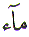, we
started with the letter Meem (
). Since we are
created from water - Maa 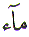, we
started with the letter Meem ( ). Since
we finish our earthly existence with death - Mawt , we must end with the letter Meem (
). Since
we finish our earthly existence with death - Mawt , we must end with the letter Meem ( ).
).
Mawt - Death is a change
of state from material world to the spiritual world. Mawt is the end of one journey and the beginning of
another. There is a Chinese proverb 'Every journey begins with
one step'. Mawt is that first step of the next
journey. The new state can be Jannat
or Jahannum , heaven or hell. That new state
is a result of our belief and works in this world. If our belief
is sound and we conduct our life on the path of Islam, the right
path, the Siratul Mustaqeem, then the Meezan
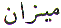- with a Meem ( ),
that is, the Balance will weigh in our favour. If the life in
this world is based on hypocrisy, and disbelief, the Meezan will weigh against us. How do we tip the Meezan in our favour, with Allah's help? We must learn
some good. Where do we learn? We learn at school. As it was stated
in one of the previous articles, this life is a place of learning.
This life is the school of learning. We must learn some goodness.
And what is a school in Arabic? It is a Madrasah 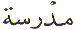with a Meem (
),
that is, the Balance will weigh in our favour. If the life in
this world is based on hypocrisy, and disbelief, the Meezan will weigh against us. How do we tip the Meezan in our favour, with Allah's help? We must learn
some good. Where do we learn? We learn at school. As it was stated
in one of the previous articles, this life is a place of learning.
This life is the school of learning. We must learn some goodness.
And what is a school in Arabic? It is a Madrasah 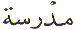with a Meem ( )!
)!
From the time we are
created from water - Maa to the time of death - Mawt, we all go through the process of learning. We
either go to a Madrasah to learn or even if we have never
attended a school, life itself is a Madrasah
or a school. As we have already seen in a previous article, that
the letter Meem when pronounced is the word MEEM 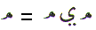.
In the word MEEM we have the letter Meem either side and the letter
Ya ( ) in the middle. Therefore, from
the time of creation to the time of annihilation knowledge is
a requirement. Since the letter Ya (
) in the middle. Therefore, from
the time of creation to the time of annihilation knowledge is
a requirement. Since the letter Ya ( )
represents knowledge, our function on earth is to seek knowledge
from cradle to grave. Life in general is one long learning process.
Life is a school or Madrasah. Knowledge is not only contained
in the Quran but it is found in everything that Allah has created.
The Quran is the guidance to understanding this knowledge. Everything
that Allah has created has a purpose. Every visible thing has
an analogy in the hidden world. Allah confirms this in the Quran.
)
represents knowledge, our function on earth is to seek knowledge
from cradle to grave. Life in general is one long learning process.
Life is a school or Madrasah. Knowledge is not only contained
in the Quran but it is found in everything that Allah has created.
The Quran is the guidance to understanding this knowledge. Everything
that Allah has created has a purpose. Every visible thing has
an analogy in the hidden world. Allah confirms this in the Quran.
Remember when Musa ( ) went to school? Which Madrasah did Musa (
) went to school? Which Madrasah did Musa ( ) attend?
Majmaa al Bahrain 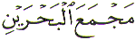- The Meeting Point or the Junction of the two rivers.
Where is that meeting point? The word Majmaa
is the word Jamaa
To Add. Add what? Add a Meem (
) attend?
Majmaa al Bahrain 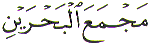- The Meeting Point or the Junction of the two rivers.
Where is that meeting point? The word Majmaa
is the word Jamaa
To Add. Add what? Add a Meem ( ) to
achieve Majmaa 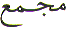.
) to
achieve Majmaa 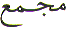.
Now if we look at the
word Majmaa we find that instead of Meem ( ) Ya (
) Ya ( ) Meem
(
) Meem
( ),
),
we have Meem ( )
Jeem (
)
Jeem ( ) Meem (
) Meem ( )
followed by Ayn (
)
followed by Ayn ( ).
).
That is, in the place
of the letter of knowledge ( ) we
have the letter Jeem (
) we
have the letter Jeem ( ). Why? Because
Musa (
). Why? Because
Musa ( ) went to seek knowledge. In case
it has slipped the readers mind, the name Musa (
) went to seek knowledge. In case
it has slipped the readers mind, the name Musa ( )
also starts with the letter Meem (
)
also starts with the letter Meem ( ).
).
In his quest for knowledge
( ), how many lessons did Musa (
), how many lessons did Musa ( ) receive? It was three (
) receive? It was three ( = 3). During the three lessons, Musa (
= 3). During the three lessons, Musa ( ) became impatient. He lacked patience,
and patience in Arabic is Sabr which starts with the letter Saad
(
) became impatient. He lacked patience,
and patience in Arabic is Sabr which starts with the letter Saad
( ). In the Asma ul Husna the Attribute
As Saboor is the 99th Attribute in the 99
Names of Allah. That is Sabr is the final lesson for us.
). In the Asma ul Husna the Attribute
As Saboor is the 99th Attribute in the 99
Names of Allah. That is Sabr is the final lesson for us.
That is Meem ( =
40) + Ya (
=
40) + Ya ( = 10) + Meem (
= 10) + Meem ( =
40) = Saad (
=
40) = Saad ( = 90).
= 90).
When the explanation
was given by Khidr ( ), the mystery of
the lessons became clear or visible or Ayn (
), the mystery of
the lessons became clear or visible or Ayn ( ).
).
If we look at the numerical value of the for the word Majmaa we get:
Meem ( )
+ Jeem (
)
+ Jeem ( ) + Meem (
) + Meem ( )
+ Ayn (
)
+ Ayn ( ) = 40 + 3 + 40 + 70 = 153
) = 40 + 3 + 40 + 70 = 153
The connection between the words MEEM and Majmaa is the number 9 for completion.
Meem Ya Meem = 90 = 9 + 0 = 9
Meem Jeem Meem Ayn = 153 = 1 + 5 + 3 = 9
Similarly the word MEEM
(

 ), is the place of meeting of the student
and the teacher. The Mureed or student is at the first Meem
(
), is the place of meeting of the student
and the teacher. The Mureed or student is at the first Meem
( ) and the Murshid
or teacher is at the second Meem (
) and the Murshid
or teacher is at the second Meem ( ). What
separates these two Meems or the Mureed (first Meem) and the Murshid
(second Meem)? It is the letter Ya (
). What
separates these two Meems or the Mureed (first Meem) and the Murshid
(second Meem)? It is the letter Ya ( ).
The separation between the student and the teacher is knowledge
(
).
The separation between the student and the teacher is knowledge
( ). The first one is seeking knowledge
while the second one has already attained knowledge. The interesting
point is that both the student and the teacher are at Meem (
). The first one is seeking knowledge
while the second one has already attained knowledge. The interesting
point is that both the student and the teacher are at Meem ( ). One wants to learn about Meem (
). One wants to learn about Meem ( )
and the other knows something about Meem (
)
and the other knows something about Meem ( ).
).
But why do we need to seek spiritual knowledge? Because Allah tells us to do so:
Notice the Chapter Name
in the above reference. It is called Saad ( )!
)!
We have already come
across the letter Saad in the previous section. We could say that
the letter Saad ( ) is the 'zipped
up' version of the word MEEM
) is the 'zipped
up' version of the word MEEM 

 .
.
Before we move on to the next section let us look at something interesting.
For those who say Abjad
numerology is not part of Islam, can they explain what is meant
by the highlighted part of the Hadees above? How does one form
the number 90 with just the thumb and index finger. Not with the
'fingers'. Not with the 'hands'. Only with one thumb and one index
finger. Could the answer be 90 = Saad  ?
?
Notice the last word in the above reference - Saadiqeen 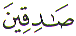- Truthful. Do you see a letter in the word Saadiqeen that can be formed with a thumb and index finger that looks like an opening in a wall? Answer TRUTHFULLY !
The narrators of the
above Hadees knew the Abjad numerical value of the Arabic letters.
Imam Bukhari ( ) understood the
'90' and therefore no effort was made to explain this mystical
'90'. He must have assumed all learned people knew what it meant,
therefore an explanation was not necessary.
) understood the
'90' and therefore no effort was made to explain this mystical
'90'. He must have assumed all learned people knew what it meant,
therefore an explanation was not necessary.
Why do todays 'learned' scholars and Imams deny that the Abjad numerology is part of Islam? And talking about Imams...
An Imam is a religious scholar. An Imam is the most learned scholar of Quran and Hadees
in his community. An Imam is one who has double Alif ( ) and double Meem (
) and double Meem ( )
in his title IMAM . The duty of an Imam is
not to be taken lightly. On the one side, the Imam is
a representative of Allah and His Rasool Muhammad
)
in his title IMAM . The duty of an Imam is
not to be taken lightly. On the one side, the Imam is
a representative of Allah and His Rasool Muhammad  to
the community. On the other side, an Imam is
a representative of his community in front of Allah and His Rasool
Muhammad
to
the community. On the other side, an Imam is
a representative of his community in front of Allah and His Rasool
Muhammad  . Therefore an Imam is
one who stands on a double edged sword. He cannot and must not
let down either side. If he lets down either side, he will be
ruined.
. Therefore an Imam is
one who stands on a double edged sword. He cannot and must not
let down either side. If he lets down either side, he will be
ruined.
Since we are talking
about Alif, Meem, Alif, Meem, or Double Alif ( )
and double Meem (
)
and double Meem ( ). What does single
Alif and single Meem stand for? It stands for Zakat
- Charity. In the Hadees there is an explanation of how to work
out Zakat. Most of the calculations are based
on camels and sheep. In this day and age, not many people own
camels and sheep. So, for the majority of the Muslims the calculation
is as follows:
). What does single
Alif and single Meem stand for? It stands for Zakat
- Charity. In the Hadees there is an explanation of how to work
out Zakat. Most of the calculations are based
on camels and sheep. In this day and age, not many people own
camels and sheep. So, for the majority of the Muslims the calculation
is as follows:
Almost everyone is in contact with money or 'silver'. For the latter there is a clear cut formula in the above Hadees. Zakat is One Fortieth.
Which is the same as
1 OVER 40. Or, the same as Alif ( ) over
Meem (
) over
Meem ( ). Or to say it in yet another
way, Allah's blessings on Muhammad
). Or to say it in yet another
way, Allah's blessings on Muhammad  and his community.
and his community.
Whatever we give in the
Name of Allah in this world, Allah gives us the same thing, 10
( ) times in this world. The question
then arises: If Allah returns our charity 10 times in this world,
then what can we expect in the next world? The answer is: Allah
will also reward us a further 40 times in the next world in whatever
'currency' Allah wishes. How can that be?
) times in this world. The question
then arises: If Allah returns our charity 10 times in this world,
then what can we expect in the next world? The answer is: Allah
will also reward us a further 40 times in the next world in whatever
'currency' Allah wishes. How can that be?
Mawlana Abul Noor Mohammad Bashir has stated in one his books: In the Quran, whenever there is a mention of Salah, Zakat is mentioned right next to it. The reason being that Salah is necessary to keep the body and garments clean and pure. That is the outer purification. Zakat is purification of your wealth. Zakat is necessary to keep the heart and mind pure by eating halaal food from halaal money. That is the inner purification.
Now let us clarify the above. If Salah and Zakat are related as shown in the Quran, then so is the reward for these two good deeds. Since Allah asked for 50 prayers per day and agreed on 5 prayers per day, Allah will still reward the Muslims with 50 prayers per day. Similarly Charity is rewarded 10 times in this world and 40 times reward is put aside for the next world. That makes the reward for Zakat also equal to 50.
There is one more Alif
( ) and Meem (
) and Meem ( )
that needs to be covered.
)
that needs to be covered.
Towards the end of last century and Millennium, the Muslims have been persecuted in many different countries. Some of it has been self inflicted out of greed. Like the Iran and Iraq war. While on other occasions it has been due to outside influences. Allah has been testing the faith of the Muslims. Every time, the Muslims have looked towards America for help. Whether it is military or monetary aid.
There is a very important
lesson in this. Both the words Military and Monetary
have the letter Meem ( ) while the word
Aid has the letter Alif (
) while the word
Aid has the letter Alif ( ).
Even the name America has the letters Alif (
).
Even the name America has the letters Alif ( )and Meem (
)and Meem ( ) in
it. The Muslims have got confused. They are subconsciously aware
that they need to look for the Alif (
) in
it. The Muslims have got confused. They are subconsciously aware
that they need to look for the Alif ( )
and Meem (
)
and Meem ( ). They need to turn towards Alif
and Meem. They need to ask Allah and His Rasool Muhammad
). They need to turn towards Alif
and Meem. They need to ask Allah and His Rasool Muhammad  for assistance. Instead they ask America
for Military and Monetary Aid. These
are the same people who say that the Arabic letters have no meaning.
They say Alif Laam Meem either have no meaning or only Allah knows
what they mean. Yet they themselves are unaware how they are being
manipulated by Shaytan to leave Allah and Muhammad
for assistance. Instead they ask America
for Military and Monetary Aid. These
are the same people who say that the Arabic letters have no meaning.
They say Alif Laam Meem either have no meaning or only Allah knows
what they mean. Yet they themselves are unaware how they are being
manipulated by Shaytan to leave Allah and Muhammad  and look for assistance from America. The secret is in the sound
of the letters.
and look for assistance from America. The secret is in the sound
of the letters.
Now let us finish with a double Meem for Millennium.
The word Millennium starts with the letter 'M' for
Meem ( ) and finishes with the letter
'M' for Meem (
) and finishes with the letter
'M' for Meem ( ) !
In other words, there are two Meems or 'M's in the word Millennium.
We are in the year 2000 AD. For those who will say that it is
the Christian year 2000, then the question arises: Who created
Isa (
) !
In other words, there are two Meems or 'M's in the word Millennium.
We are in the year 2000 AD. For those who will say that it is
the Christian year 2000, then the question arises: Who created
Isa ( ) in the first place, and sent
him as Messenger?
) in the first place, and sent
him as Messenger?
For those who will say that the year 2000 is based on the solar calendar, then the question arises: Who created the sun?
For those who will say that the word 'Millennium' is not an Arabic word, then the question arises: Who taught Adam all the names?
There is a lesson in what has just been mentioned for those who can think.
Even in other languages Allah is reminding the Muslims to wake up. The word Millennium is a reminder from Allah for the Muslims to once again understand the true faith and meaning of Islam. Allah even impels the non-Muslims to use words that are relevant to the Muslims. So why do the Muslims fail to 'see' the signs, reminders and warnings from Allah?
May Allah awaken the Muslims and make them a shining example to the rest of humanity. Ameen.
| BACK |